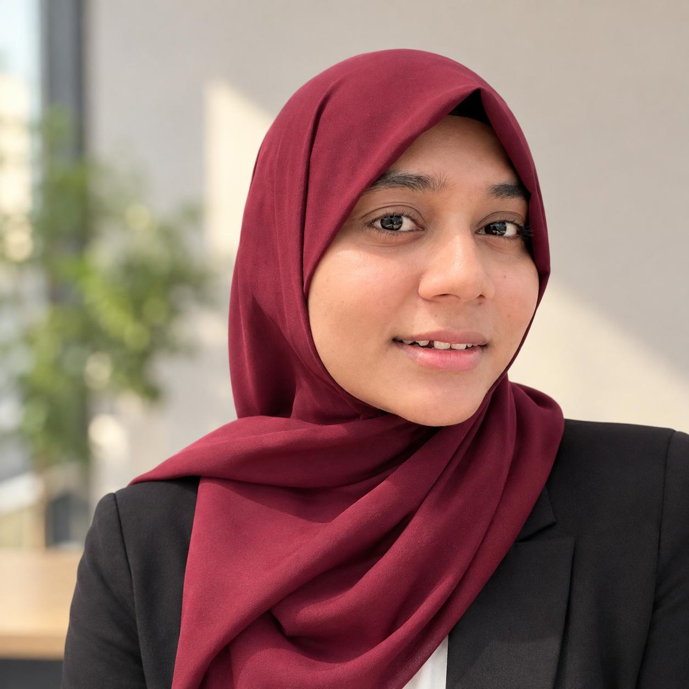

Bangladesh Youth Leadership Center (BYLC)
Volunteer · Social Change Program
Participated in youth-focused initiatives promoting positive social change and collaborated with volunteers and community members.
I’m Jannatul Ferdous Asha, a final-year Business Administration student with experience in youth leadership, volunteering, community engagement, digital creation and business support.

My interests bring together business, technology, creativity and social impact. I enjoy learning practical tools and turning ideas into clear, useful outcomes.
See full background →My experience includes volunteering with Bangladesh Youth Leadership Center and UNICEF. My current interests include digital creation, photo editing, business support, analytics and entrepreneurship.
I enjoy working with presentations, spreadsheets, research, visual content and digital projects, while continuing to strengthen my communication, teamwork and technical skills.
A mix of business, technical, creative and communication skills.
Participated in youth-focused initiatives promoting positive social change and collaborated with volunteers and community members.
Supported campaign activities, community engagement, awareness and coordination during the COVID-19 response.
Supported community-level child-health campaign activities, public interaction and awareness.
Social content, presentations, visual assets and polished digital materials.
Spreadsheets, organization, research, documentation and day-to-day digital support.
Photo editing, layout design and visual communication for professional and social projects.
Internships, business-support roles, creative projects and collaborations.